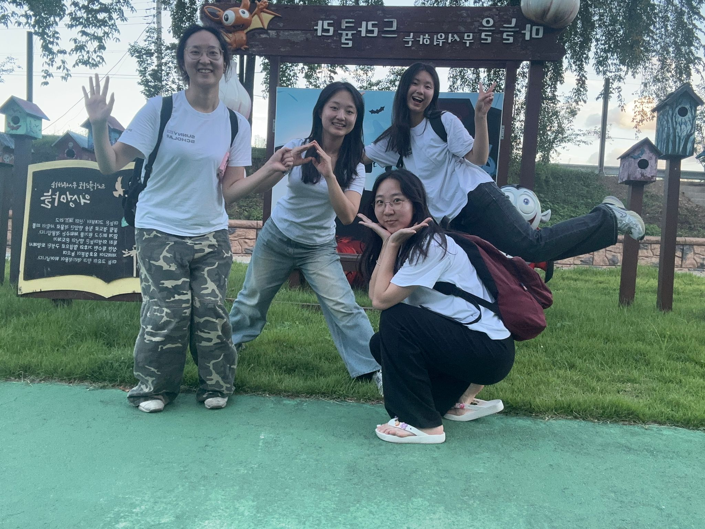

농촌 초기진입
이주노동자 온열질환
다중적 사각지대에 놓인 사람들,
보이지 않는 위험을 기록하다
SCROLL TO BEGIN
다중적 사각지대에 놓인 사람들,
보이지 않는 위험을 기록하다
2024년 여름, 한겨레21은 「폭염에 쓰러지는 이주노동자들」이라는 제목의 기사를 보도했다. 기사에는 한국 농촌의 비닐하우스에서 일하다 온열질환으로 쓰러지거나 사망한 이주노동자들의 사례가 담겨 있었다. 팀 헷사과는 이 기사를 읽고 충격을 받았다. 매년 반복되는 폭염 뉴스 속에서, 이주노동자들의 온열질환 문제는 왜 해결되지 않는 것일까?

팀은 직접 현장을 체험하기로 했다. 여름철 비닐하우스의 온도가 어느 정도인지, 그 안에서 노동한다는 것이 어떤 의미인지를 몸으로 느끼기 위해서였다. 체험은 짧았지만, 그 짧은 시간 동안 팀원들은 비닐하우스 내부의 극한 온도와 습도를 경험하며, 이 환경에서 하루 8시간 이상 노동하는 이주노동자들의 현실을 실감했다.
체험 이후 팀 회의에서, 팀원들은 각자의 감상과 의문을 나눴다. 이 문제는 단순히 '날씨가 더워서' 발생하는 것이 아니었다. 이주노동자들이 처한 구조적 조건 — 언어 장벽, 고용 불안정성, 의료 접근성의 부재 — 이 복합적으로 작용하고 있었다. 팀은 이 문제의 본질을 파악하기 위해 '문제정의' 단계부터 시작하기로 결정했다.
2024년 기준, 한국의 여름 폭염일수는 평균 22.4일. 지난 30년 대비 2배 가까이 증가한 수치다. 농촌에서 일하는 이주노동자의 수는 매해 늘어나고 있으나, 이들의 건강과 안전에 대한 관심은 그 속도를 따라가지 못하고 있다. 팀 헷사과는 이 문제에 주목했다. "왜 이주노동자들은 반복적으로 온열질환에 걸리는가?" 단순한 질문에서 출발한 조사는, 제도, 언어, 문화, 고용구조가 겹겹이 쌓인 다중적 사각지대의 실체를 드러냈다.
팀 헷사과가 문제를 조사하면서 가장 놀란 점은, 이 문제가 '알려지지 않은 것'이 아니라 '알려져 있지만 보이지 않는 것'이었다는 사실이다. 매년 폭염 시즌이 되면 온열질환 뉴스가 보도되지만, 농촌 이주노동자들의 온열질환은 통계에서도, 정책에서도, 사회적 관심에서도 체계적으로 누락되어 있었다. 이 사각지대는 물리적으로도, 제도적으로도, 심리적으로도 존재한다.
산업안전보건법은 5인 미만 사업장에 대해 다수의 조항을 면제한다. 한국 농가의 대다수는 5인 미만이다. 가장 위험한 환경에서 일하는 사람들이 법의 보호에서 가장 먼저 배제된다. 산업재해 통계에서 농업은 별도로 분류되지 않는 경우가 많고, 이주노동자의 온열질환은 '개인 건강 문제'로 처리되어 산재 인정 비율이 극히 낮다.
고용허가제 하에서 이주노동자는 사업장 변경이 극히 제한적이다. 몸이 아파도 쉬겠다고 말하기 어렵고, 온열질환 증상을 호소하는 것 자체가 고용 불안을 초래할 수 있다. '아프다'고 말할 수 없는 관계 구조가 존재한다. 미등록 노동자의 경우 병원 방문 자체가 단속 위험으로 이어질 수 있어 아파도 참는다.
농촌 지역은 도시 열섬효과와는 다른 방식으로 극한 고온에 노출된다. 비닐하우스 내부 온도는 외기 온도보다 10~15도 이상 높아, 한여름에는 50도를 넘긴다. 습도 역시 80% 이상으로, 인체의 자연 냉각 기능인 땀 증발이 사실상 차단되는 환경이다. 노지 과수원 역시 그늘 없이 직사광선에 노출된다.
안전교육 자료, 온열질환 대응 매뉴얼, 증상 자가 진단 도구 등이 대부분 한국어로만 제공된다. 캄보디아, 베트남, 태국 출신 노동자들이 증상을 인지하고 도움을 요청하는 것 자체가 구조적으로 차단되어 있다. 정보가 있어도, 필요한 사람에게 도달하지 못한다.
이 네 겹의 사각지대는 각각 독립적으로 존재하는 것이 아니라, 서로를 강화하며 문제를 더욱 보이지 않게 만든다. 통계가 없으니 정책이 안 만들어지고, 정책이 없으니 현장이 바뀌지 않고, 현장이 안 바뀌니 사람들이 계속 쓰러지지만, 그 쓰러짐은 다시 통계에 잡히지 않는다.

한국어를 못 읽는 노동자에게 한국어로만 쓰인 안전 매뉴얼. 건강보험에 가입되어 있어도 병원에 갈 수 없는 현실. 아파도 말할 수 없는 고용 관계. 그 각각의 층위가 온열질환의 위험을 증폭시킨다. 팀은 이 악순환의 고리를 끊기 위해, 가장 현장에 가까운 지점 — 초기진입 이주노동자의 신체 반응 — 에서부터 접근하기로 했다.
의성군은 한국에서 가장 폭염일수가 많은 지역이다. 연간 22.4일, 전국 1위. 사과, 복숭아, 포도 등 과수 재배가 활발하며, 고령화와 인력 부족으로 이주노동자에 대한 의존도가 매해 증가하고 있다. 2023년 기준, 농업 분야 외국인 근로자는 전체 농업 인력의 64.3%를 차지했다.
이주노동자들은 주로 동남아시아(베트남, 태국, 캄보디아, 라오스, 인도네시아)와 중앙아시아(우즈베키스탄, 네팔)에서 온다. 이들의 본국 기후와 한국 여름의 폭염은 온도 자체는 유사할 수 있으나, 결정적 차이가 있다 — 비닐하우스와 밀폐된 과수원에서의 복사열은 체감 온도를 10~15도까지 끌어올린다. 그늘 없는 노지 과수원에서의 직사광선 노출은 또 다른 차원의 위험이다.

초기진입 노동자 — 한국에 온 지 1년 이내의 노동자 — 는 특히 취약하다. 한국어 능력이 부족하고, 노동 환경에 적응하지 못했으며, 자신의 권리를 알지 못하는 경우가 대부분이다. 고용허가제(EPS)를 통해 입국한 노동자들은 사전 교육을 받지만, 그 내용이 현장의 실제 위험을 반영하지 못한다는 비판이 지속되고 있다.
더욱 심각한 것은 계절근로자들이다. 3~5개월의 단기 체류로 입국하는 이들은 체계적 안전교육의 기회가 거의 없으며, 고용주 역시 단기 인력에 대한 투자 인센티브가 부족하다. 가장 더운 시기에 입국하여 가장 취약한 상태로 가장 위험한 작업에 투입되는 구조적 모순이 여기에 있다.
농촌 지역의 고립성은 문제를 더욱 심화시킨다. 대중교통이 부재하거나 극히 제한적인 환경에서, 이주노동자들은 고용주의 숙소와 농장 사이를 오가는 것이 일상의 전부다. 외부 세계와의 접점이 차단된 상태에서, 건강 문제가 발생해도 도움을 구할 수 있는 채널은 거의 없다.

팀 헷사과의 현장 조사 결과, 농업 분야 이주노동자의 온열질환 경험률은 놀랍도록 높았다. 조사 대상 31명 중 13명, 약 42%가 온열질환 증상을 경험한 적이 있다고 응답했다. 이는 전체 근로자 평균의 수배에 달하는 수치다. 그리고 팀이 발견한 가장 중요한 패턴은 '초기진입'이라는 변수였다.
온열질환은 열사병, 열탈진, 열경련, 열실신 등을 포함한다. 가장 위험한 열사병의 경우, 체온이 40도 이상으로 올라가면 의식을 잃을 수 있으며, 적절한 치료가 30분 이내에 이루어지지 않으면 사망에 이를 수 있다. 그러나 현장의 노동자들은 이러한 증상을 "더위를 먹었다" 정도로 가볍게 인식하는 경향이 있으며, 초기 증상을 무시하고 작업을 계속하는 경우가 대부분이다.
'초기진입'이라는 키워드가 핵심이었다. 이주노동자들 중에서도 한국에 온 지 얼마 되지 않은, 즉 고온다습한 농업 환경에 아직 순화(acclimatization)되지 않은 노동자들의 온열질환 위험이 현저히 높았다. 열순화는 통상 7~14일이 소요되며, 이 기간 동안 신체는 고온 환경에 적응하기 위해 땀 분비량 증가, 심박수 조절, 체온 조절 기능 향상 등의 생리적 변화를 거친다. 그러나 초기진입 노동자들에게는 이 적응 기간이 주어지지 않는다.
초기진입 노동자 vs 기존 노동자 — 생리 데이터 비교
| 지표 | 초기진입 | 기존 노동자 |
|---|---|---|
| 평균 심박수 (bpm) | 136 | 118 |
| 교감신경 활성도 (LF/HF) | 0.84 | 2.53 |
| 심부체온 (°C) | 38.62 | 37.83 |

노동자들의 증언에서 반복적으로 등장하는 패턴이 있다. "아파도 말할 수 없다"는 것. 이는 단순한 언어 장벽의 문제가 아니다. 고용 관계의 비대칭성, 사업장 변경의 어려움, 강제 귀국에 대한 두려움이 복합적으로 작용한다. 아픈 것을 말하면 일을 못 하는 사람으로 취급받을 수 있고, 일을 못 하면 계약이 해지될 수 있다.
온열질환이 발생한 이후의 대응 역시 구조적 문제를 드러낸다. 농촌 지역에는 응급의료 인프라가 부족하며, 가장 가까운 종합병원까지 차로 30분~1시간이 걸리는 경우가 흔하다. 119 신고를 해도 농로 접근이 어려워 골든타임을 놓치는 사례가 보고되고 있다. 미등록 노동자의 경우, 병원에 가면 신분이 노출될 수 있다는 두려움 때문에 증상이 심각해질 때까지 참다가, 의식을 잃어서야 비로소 병원에 실려 가는 경우가 발생한다.

팀 헷사과는 현장 조사와 인터뷰, 문헌 분석을 종합하여, 초기진입 이주노동자의 온열질환이 세 단계의 구조적 부재에서 비롯된다는 결론에 도달했다. 사전, 현장, 사후 — 각 단계는 독립적인 문제인 동시에, 서로 연결되어 악순환을 형성하고 있었다.
이주노동자들은 출국 전 한국의 기후 특성, 특히 여름철 농업 현장의 극한 환경에 대한 교육을 거의 받지 못한다. 고용허가제의 사전교육은 노동법, 기본 한국어 등에 집중되어 있으며, 작업장 안전교육 중 온열질환 예방에 대한 내용은 형식적이거나 부재한다. 입국 후에도 열순화를 위한 점진적 작업량 조절 없이 즉시 전일 노동에 투입되는 것이 일반적이다.
비닐하우스 내부에는 온도 · 습도를 실시간으로 모니터링하는 장비가 없는 경우가 대부분이다. WBGT(습구흑구온도지수) 기준 작업 중단 기준이 있지만, 현장에서는 거의 적용되지 않는다. 노동자 스스로 증상을 인지하더라도, 다국어 증상 체크리스트나 응급 대응 매뉴얼이 없어 적시 대응이 어렵다. 작업 중 정기적 휴식과 수분 보충도 체계화되어 있지 않다.
온열질환이 발생하더라도 체계적인 응급 대응 프로토콜이 없다. 농촌 지역 의료 접근성 문제와 언어 장벽으로 인해, 증상이 심각해져도 적절한 의료 서비스를 받기 어렵다. 발생 건수가 산재로 보고되는 비율도 극히 낮아, 통계적 사각지대가 재생산된다. 이는 다시 사전 단계의 정책 수립을 어렵게 만드는 악순환으로 이어진다.

결국, 이 문제의 핵심은 '더위'가 아니라 '더위에 대한 준비와 대응의 부재'에 있었다. 같은 온도에서 일하더라도, 사전에 열순화 프로그램을 거치고, 현장에서 적절한 모니터링과 휴식이 보장되며, 증상 발생 시 신속히 대응할 수 있는 체계가 있다면, 온열질환의 발생률은 극적으로 줄어들 수 있다. 팀은 이 세 단계 중 가장 즉각적으로 개입할 수 있는 '현장 단계'에 집중하여 솔루션을 설계하기로 했다.

팀 헷사과가 설계한 솔루션은 '온열질환 안심키트(Safety Kit)'다. 이름에는 '안심(安心)'이라는 이중적 의미를 담았다 — 몸의 안전(安)과 마음의 편안함(心). 안심키트는 초기진입 이주노동자가 비닐하우스에서 작업할 때, 자신의 신체 상태를 스스로 모니터링하고, 위험 상황에서 즉각 대응할 수 있도록 설계된 통합 키트다.

실험 결과
팀은 안심키트의 효과를 검증하기 위해, 협력 농가에서 소규모 파일럿 실험을 진행했다. 안심키트를 사용한 그룹과 사용하지 않은 그룹의 온열질환 관련 지표를 비교한 결과, 유의미한 차이가 관찰되었다.

솔루션의 의의


이 프로젝트의 궁극적 목표는 "보이지 않는 것을 보이게 만드는 것"이다. 농촌 초기진입 이주노동자의 온열질환은 통계에 잡히지 않고, 뉴스에 나오지 않으며, 정책 의제에 오르지 못하는 문제다. 존재하지만 인식되지 못하는 — 가장 해결이 어려운 종류의 문제다.
팀 헷사과는 이 문제를 "발견"했다기보다, "직시"했다. 현장에 가고, 사람들을 만나고, 그들의 이야기를 듣는 과정에서 시스템의 실패가 개인의 고통으로 전환되는 메커니즘을 확인했다.
후속 계획
농촌 초기진입 이주노동자의 온열질환은 기후 문제가 아닌 '준비 없는 노출'의 문제다. 정책적 · 사회적 · 기후적 · 정보적 사각지대가 중첩되어, 매년 같은 피해가 반복되고 있다.
온열질환 발생은 '초기진입 3개월'에 집중된다. 열순화 부재 + 언어 장벽 + 관계적 제약이 결합되어, 가장 취약한 시기에 가장 적은 보호를 받는 역설적 구조.
안심키트(10개 언어 리플렛 + 쿨링 아이템 + 응급 연락 시스템)를 통해 현장 단계에 직접 개입. 심부체온 1.13°C 감소, 체감온도 3~4°C 감소, 자가 인지율 31% → 78%.
저비용 · 고효과 모델로 타 농업 지역 확산 가능. 지자체 · 농협 연계 배포 채널 활용. 고용허가제 사전교육 과정 포함 제안. 디지털 모니터링으로의 확장 가능성.
팀은 이 프로젝트의 한계를 명확히 인식하고 있다. 파일럿 실험의 규모가 소규모(N=24)로 통계적 일반화에 한계가 있고, 안심키트는 '현장 단계'에 집중한 솔루션으로 사전 단계(정책 · 제도)와 사후 단계(의료 · 기록)의 구조적 문제는 여전히 미해결이다. 프로젝트 기간이 한 학기로 한정되어, 장기적 효과 추적이 이루어지지 못했다.
그러나 이 한계들은 동시에 다음 연구와 실천의 방향을 가리키기도 한다. 소규모였기 때문에 정교한 파일럿이 가능했고, 현장에 집중했기 때문에 실행 가능한 솔루션이 나왔으며, 기간이 한정되었기 때문에 집중적인 문제정의가 이루어질 수 있었다.
농촌의 비닐하우스 안에서, 보이지 않는 사람들이 오늘도 일하고 있다. 이들의 몸은 아직 이 더위에 준비되지 않았고, 이들의 목소리는 아직 우리에게 닿지 않고 있다. 팀 헷사과가 만든 안심키트는 작은 시작이지만, 그 작은 시작이 변화의 첫 번째 신호가 될 수 있다.
다음 여름이 오기 전에, 준비해야 할 것들이 있다. 이 프로젝트가 보여준 것은, 문제를 다시 정의하는 것만으로도 해결의 방향이 완전히 달라질 수 있다는 사실이다. '폭염 대책'이 아니라 '초기진입 노동자의 열순화 지원'으로, '온열질환 예방'이 아니라 '다중적 사각지대의 해소'로 — 문제의 프레임을 바꾸었을 때 비로소 실효성 있는 솔루션이 가능해졌다.